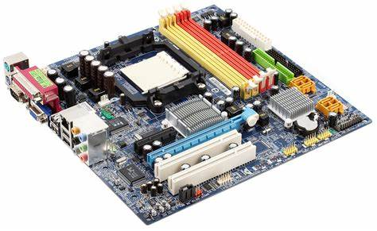
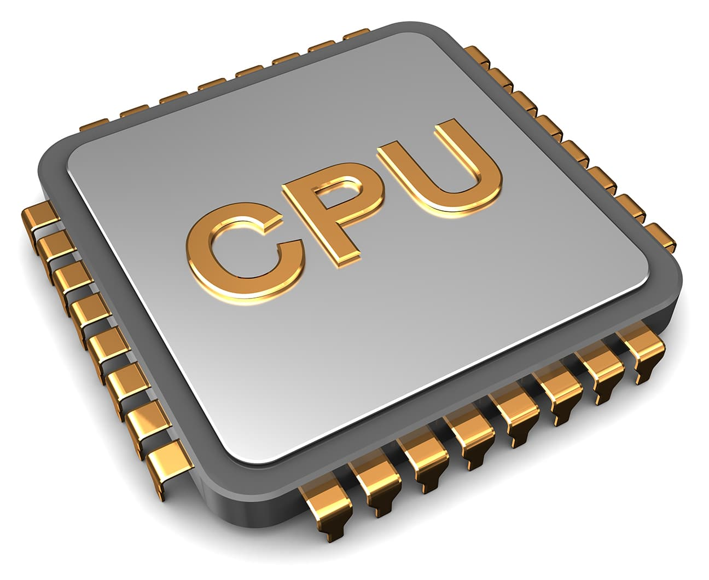
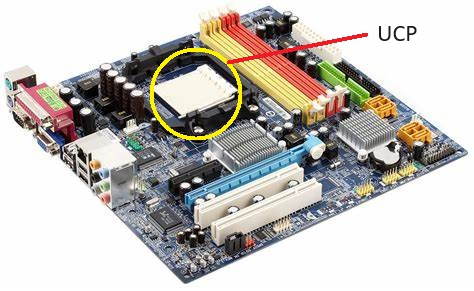
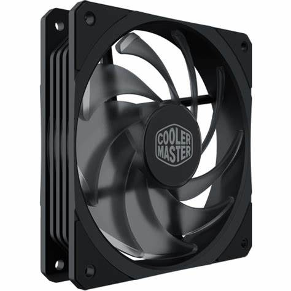
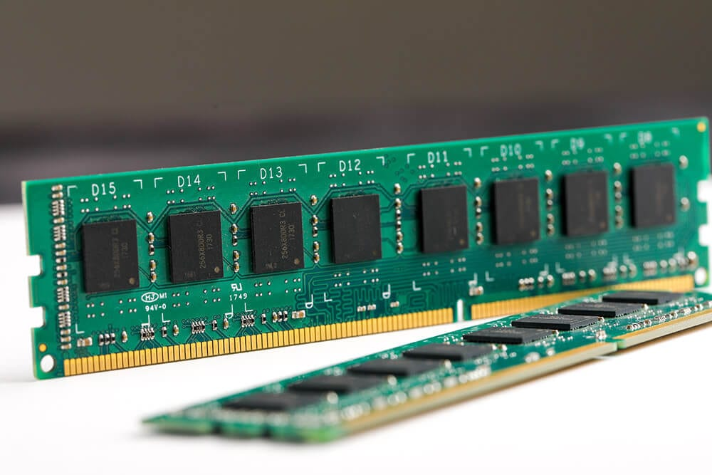
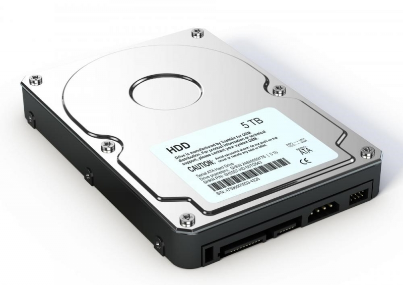
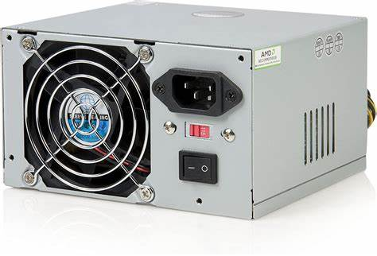
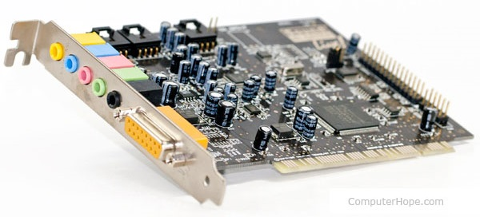
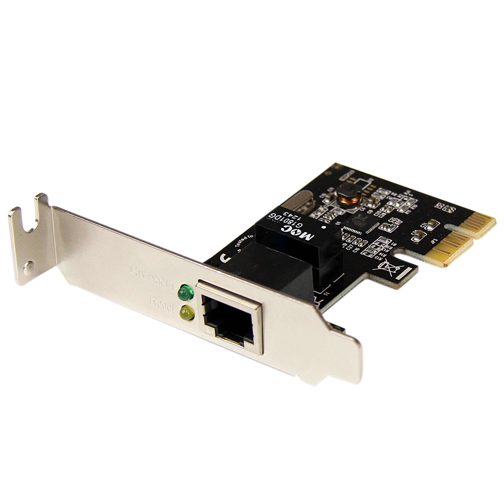

EL ORDENADOR
Componentes:
- Placa base: también conocida como tarjeta madre o MotherBoard , es el componente principal, es un circuito integrado muy complejo que está equipado con ciertas ranuras en donde irán instalados los demás componentes. Las capacidades de esta varían deacuerdo a las marcas y necesidades.
- Unidad central de procesamiento (UCP): generalmente conocida como CPU  (Central Processing Unit) y comunmente confundida con el Case. Es una pieza minúscula (hoy debe ser del tamaño de una uña) que vendría a ser el cerebro de la máquina ya que gobierna todos los componentes, periféricos y, tristemente, a los usuarios en gran medida. Va instalado sobre la placa base .
- ventiladores: Se les conoce como Fan Cooler , que es justamente eso, un ventilador, está instalado en la placa base y sirve para enfriar al procesador, es conveniente instalar varios más para enfriar otros componentes, adicionalmente, el procesador está rodeado por una pasta térmica que evita que se funda ya que trabaja tan rápido que llega a ponerse al rojo vivo en pocos segundos sin estos sistemas de enfriamiento.
- Memoria RAM: (Random Access Memory) o memoria de acceso aleatorio, es un circuito complejo y fundamental para el funcionamiento de la máquina. Se encarga de almacenar datos de manera temporal mientras el ordenador está en uso, y se vacía al apagarse o reiniciarse este. Van instaladas en la placa base y tienen capacidades limitadas, generalmente expresadas en GigaBytes.
- Disco rígido: también conocido como disco duro o hard disk, es la unidad central de almacenamiento, es ahí donde se guardarán los datos que se mantendrán fijos y podrán ser manipulados por el usuario en cualquier momento, excepto, claro, aquellos datos que pertenezcan al sistema operativo, a los cuales el usuario ordinario no tiene acceso, y de tenerlo, no se recomienda su manipulación. Va instalado en la placa base y conectado también a la fuente de poder.
- Fuente de poder: La van a encontrar como Power Supply  y es el dispositivo que recibe la energía desde la toma-corriente y la distribuye de forma adecuada a la motherboard y a los diversos componentes. Va conectada a la placa base.
- Tarjeta de video: Es un circuito integrado que va instalado en la placa base, también se le conoce como Video Card
 y está encargado de proporcionar la data necesaria para formar las imágenes que verá el usuario en la pantalla. Hay que aclarar que la mayoría de las placas base cuentan con una tarjeta de video integrada, pero para su funcionamiento, toma una parte de la memoria RAM, y esto se evita usando una extra. Tiene una conexión externa en la que va conectado el monitor o pantalla.
y está encargado de proporcionar la data necesaria para formar las imágenes que verá el usuario en la pantalla. Hay que aclarar que la mayoría de las placas base cuentan con una tarjeta de video integrada, pero para su funcionamiento, toma una parte de la memoria RAM, y esto se evita usando una extra. Tiene una conexión externa en la que va conectado el monitor o pantalla. - Tarjeta de sonido: en las vitrinas se las ve bajo el nombre de Sound Card y sirven para conectar los periféricos encargados de emitir sonidos (bocinas). Para ello cuentan con diversos "plugs" de colores para facilitar su identificación (verde es para audio, rojo para micrófono). Va conectada a la placa base. Hay que aclarar que la mayoría de las placas base cuentan con una tarjeta de sonido integrada, pero es de una calidad estandar que los fabricantes de tarjetas de sonido superan por mucho.
- Tarjeta de red: Se encargan de conectar al ordenador con el mundo a través de la red mundial. Actualmente, la mayoría de las motherboard cuentan con una integrada, pero no siempre fue así. Es algo prácticamente nuevo.
- Otras tarjetas: Existen otras tarjetas que pueden ser instaladas en las placas base con diversas funciones, esto dependerá, claro, de la cantidad de ranuras o slots con las que cuente la motherboard.
- Tarjetas de impresora
- tarjetas bluetooth
- tarjetas wi-fi
- puertos de juego
- puertos de Televisión
- lectores USB
- unidades lectoras (CD, DVD)
Vendrían a ser las partes que van dentro de la Caja
Practiquemos un poco:
Los componentes de una compu están todos integrados a la placa base?
Seleccione la respuesta correcta: